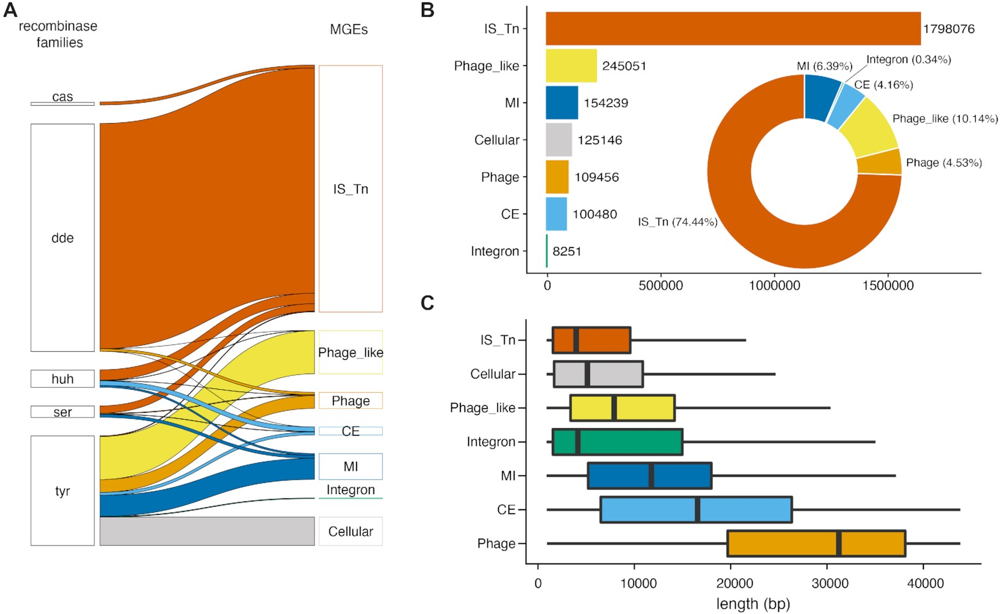
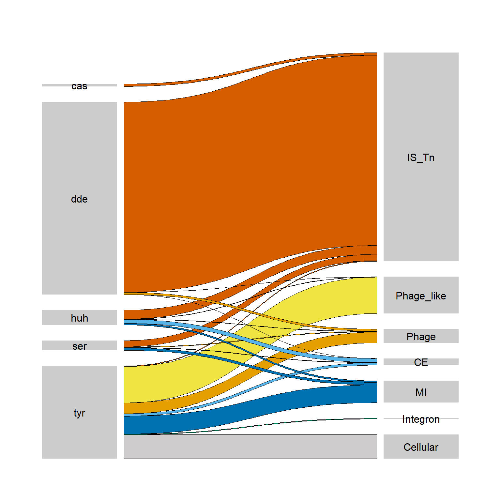
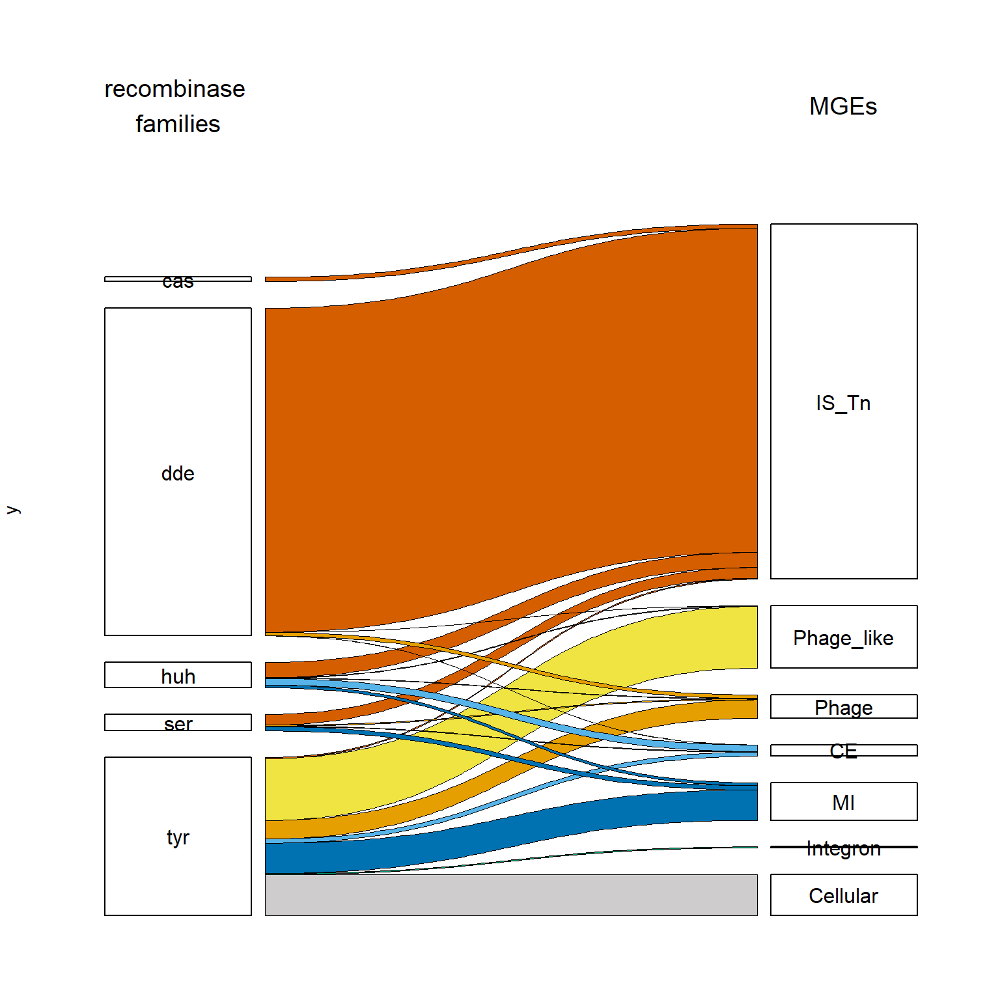
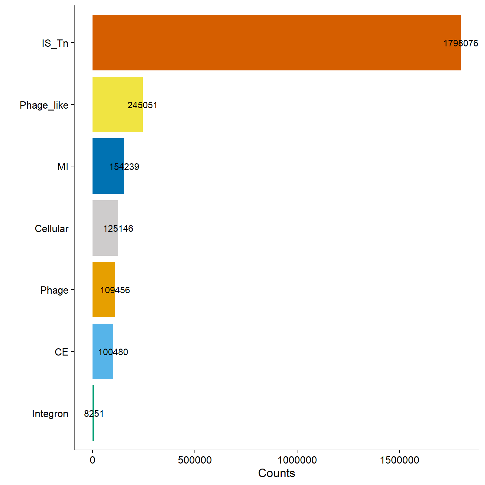
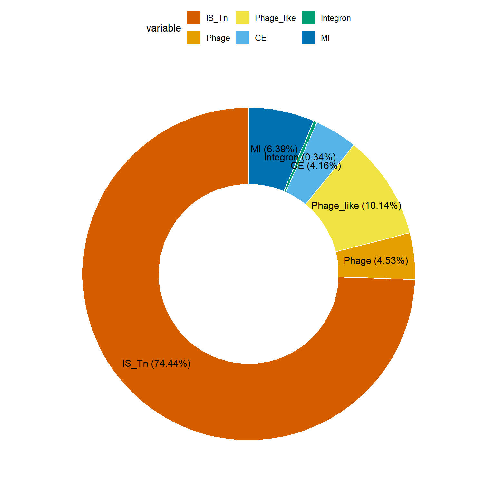
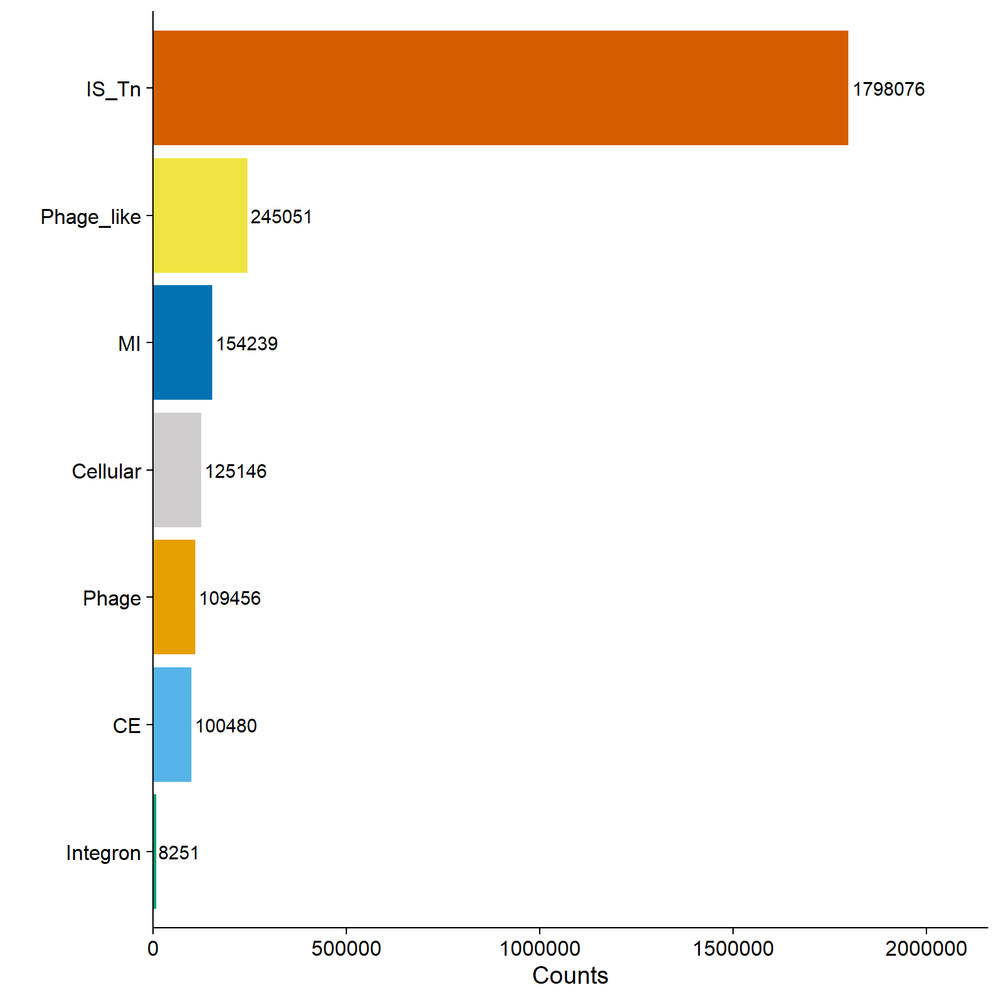
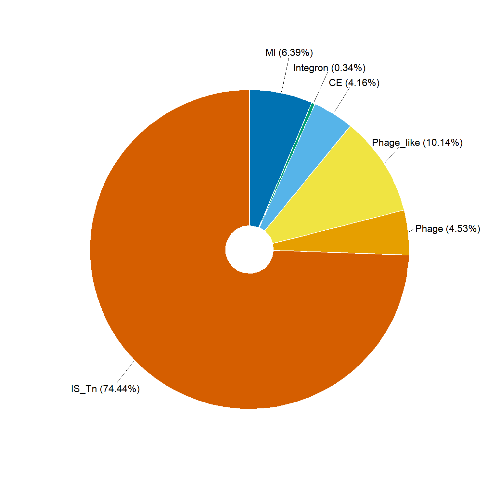
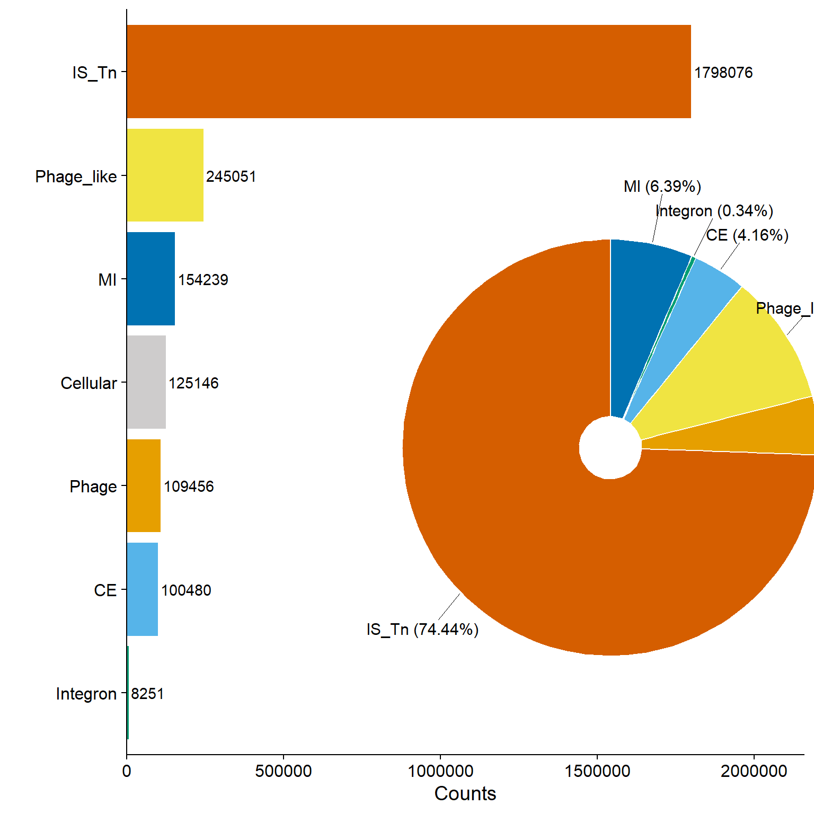
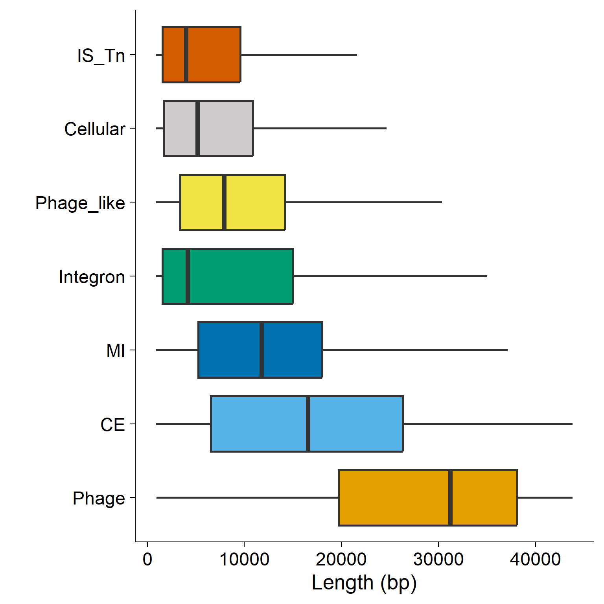
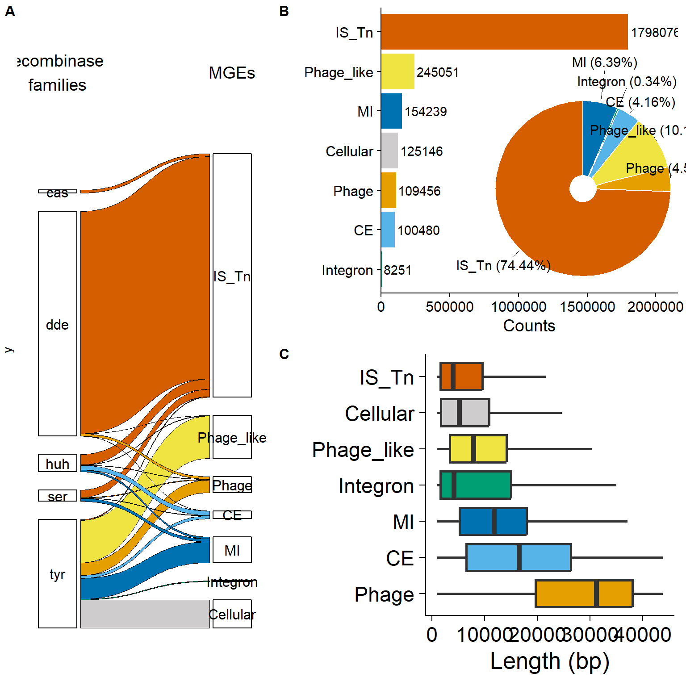

mge_pg <- read_tsv("data/processed_data/mge_bins_per_genome_final.txt.gz", col_names = T)
mge_solitary <- read_tsv("data/processed_data/solitary_mge_bins_final.txt.gz", col_names = F)
rec_class <- read_tsv("data/raw_data/recombinase.list.gz", col_names = F)
glist <- read_tsv("data/raw_data/genome_status_supplementary_tableS2.txt.gz", col_names = T)Figura 2
Censo de Elementos Genéticos Móviles en Procariotas

- Contribución de cada una de las cinco principales familias de recombinasas a las seis categorías de MGEs, así como a las recombinasas celulares.
- Número de MGEs por categoría (gráfico de barras) y porcentaje de cada categoría (gráfico de dona) en 76,000 genomas de 3,000 especies, utilizando el flujo de trabajo descrito en la Figura 1.
- Longitudes predichas de MGEs no anidados en pares de bases. Los bigotes representan el rango entre los percentiles 10 y 90.
PASO 1: Importar datos
Uso de Archivos Comprimidos: Cuando trabajen con archivos comprimidos (por ejemplo, con extensión .gz), no es necesario descomprimirlos manualmente antes de cargarlos en R.
Código Correcto para Cargar Archivos Comprimidos: Para cargar archivos comprimidos sin descomprimirlos previamente, utilicen el siguiente código:
PASO 2: Manipulación y Limpieza de los datos
# Obtener los genomas con la mas alta calidad
glist_high <- glist %>%
filter(genome_quality == "high")
# Renombrar columnas en rec_class
rec_class <- rec_class %>%
# Cambiar X1 por class y X2 por mgeR
dplyr::rename(class = X1, mgeR = X2)
# Renombrar columnas en mge_solitary
mge_solitary <- mge_solitary %>%
dplyr::rename(IS_Tn = X1, Phage = X2, Phage_like = X3, CE = X4, Integron = X5, MI = X6, Hotspot = X7, UC = X8, Cellular = X9, island = X10, island_size = X11, prot_count = X12, phage_count = X13, CONJ_T4SS = X14, mgeR = X15)
# Transformación y Filtrado de Datos de MGE Solitario
mge_solitary_melted <- mge_solitary %>%
select(1:11,15) %>% # Seleccionar columnas de la 1 a la 11, y la 15
# Convierte las columnas 1 a 9 de formato ancho a largo utilizando gather().
# - mge: Nombre de la nueva columna que contendrá los nombres originales de las variables.
# - mge_pa: Nueva columna que almacenará los valores de las celdas de las columnas originales.
gather(mge, mge_pa, 1:9) %>%
filter(mge_pa ==1) %>% # filtrar por valores igual a 1 en la columna mge_pa
filter(.,!grepl("UC", mge)) %>% # Elimina las filas donde la columna mge contenga la cadena "UC", usando grepl() con ! (negación lógica).
filter(.,!grepl("Hotspot", mge)) %>% # Elimina las filas donde mge contenga la palabra "Hotspot".
mutate(mgeRn = str_replace_all(mgeR,"_","")) %>% # Crea una nueva columna mgeRn, eliminando todos los guiones bajos (_) en la columna mgeR
filter(!str_detect(mgeRn, '[:alnum:] &{1,}')) %>% # Filtra las filas donde mgeRn NO contenga un patrón de caracteres alfanuméricos seguidos de &.
select(-mgeRn) %>% # Elimina la columna mgeRn
mutate(mgeR = str_replace_all(mgeR,"&","")) # Modifica mgeR, eliminando todos los caracteres &.
# Visualizar datos
head(mge_solitary_melted)# A tibble: 6 × 5
island island_size mgeR mge mge_pa
<chr> <dbl> <chr> <chr> <dbl>
1 562.SAMN04376786.LVNY01000045:952-4426 3474 rve IS_Tn 1
2 1313.SAMEA1032643.CNPJ02000077:179268-184242 4974 huh_y1 IS_Tn 1
3 90371.SAMN06345841.MVIX01000065:110-337 227 huh_y1 IS_Tn 1
4 766148.SAMN00792444.AFGX01000029:22-9946 9924 rve IS_Tn 1
5 95486.SAMN05002005.MUWP01000187:1439-20561 19122 DDE_3 IS_Tn 1
6 562.SAMN03075146.JRLD01000012:423-1556 1133 Transposase_20 IS_Tn 1mge_solitary_melted_dw <- mge_solitary_melted %>%
select(-mgeR,-mge_pa) %>% # Elimina las columnas mgeR y mge_pa
mutate(island1 = island) %>% # Crea una nueva columna island1, duplicando el valor de la columna island.
separate(island1, c("g1","g2","g3")) %>% # Divide la columna island1 en tres nuevas columnas (g1, g2, g3), usando separate(). NOTA: Se asume que island1 contiene valores separados por un delimitador (por defecto, "_" o ".").
mutate(genome = paste(g1, g2, sep = ".")) %>% # Identificador del genoma. Crea una nueva columna genome, concatenando g1 y g2 con un punto (".") entre ellos.
select(-g1,-g2,-g3) %>% # Elimina las columnas g1, g2 y g3
filter(genome %in% glist_high$genome) %>% # Solo quedarse con genomas de alta calidad
select(-genome) # Eliminar columna genoma
head(mge_solitary_melted_dw)# A tibble: 6 × 3
island island_size mge
<chr> <dbl> <chr>
1 562.SAMN04376786.LVNY01000045:952-4426 3474 IS_Tn
2 1313.SAMEA1032643.CNPJ02000077:179268-184242 4974 IS_Tn
3 90371.SAMN06345841.MVIX01000065:110-337 227 IS_Tn
4 766148.SAMN00792444.AFGX01000029:22-9946 9924 IS_Tn
5 95486.SAMN05002005.MUWP01000187:1439-20561 19122 IS_Tn
6 562.SAMN03075146.JRLD01000012:423-1556 1133 IS_TnAlmacenar variable
write.table(mge_solitary_melted_dw,file="processed_data/mge_bins_final_solitary_collapsed.txt", sep = "\t", row.names = F, col.names = T, quote = F)PASO 3: Clasificación y Conteo de MGE
Distribución de diferentes clases de MGE y cuántas veces aparecen en el conjunto de datos.
# Unir la informacion a traves de la columna mgeR
mge_solitary_rclass_all <- left_join(mge_solitary_melted, rec_class, by = "mgeR") %>%
select(-island_size, -mge_pa, -mgeR) %>% # Elimina las columnas island_size, mge_pa y mgeR
separate(island, c("g1","g2","g3")) %>% # Divide la columna island en tres nuevas columnas (g1, g2, g3).
mutate(genome = paste(g1, g2, sep = ".")) %>% # Crea una nueva columna genome, concatenando g1 y g2 con un punto (".") entre ellos.
select(-g1,-g2,-g3) %>% # Elimina las columnas auxiliares (g1, g2, g3), ya que su información ahora está en genome.
group_by(class,mge) %>% # Agrupa los datos por class y mge
summarise(count = n()) # Cuenta cuántas veces aparece cada combinación de class y mge
head(mge_solitary_rclass_all)# A tibble: 6 × 3
# Groups: class [3]
class mge count
<chr> <chr> <int>
1 cas IS_Tn 12184
2 dde CE 181
3 dde IS_Tn 913577
4 dde Phage 10154
5 dde Phage_like 131
6 huh CE 18627Distribución de diferentes clases de MGE en genomas de alta calidad.
# Unir la informacion a traves de la columna mgeR
mge_solitary_rclass <- left_join(mge_solitary_melted,rec_class, by = "mgeR") %>%
select(-island_size, -mge_pa, -mgeR) %>% # Elimina las columnas island_size, mge_pa y mgeR
separate(island, c("g1","g2","g3")) %>% # Divide la columna island en tres nuevas columnas (g1, g2, g3).
mutate(genome = paste(g1, g2, sep = ".")) %>% # Crea una nueva columna genome, concatenando g1 y g2 con un punto (".") entre ellos.
select(-g1,-g2,-g3) %>% # Elimina las columnas auxiliares (g1, g2, g3), ya que su información ahora está en genome.
filter(genome %in% glist_high$genome) %>% # Solo quedarse con genomas de alta calidad
group_by(class,mge) %>% # Agrupa los datos por class y mge
summarise(count = n()) # Cuenta cuántas veces aparece cada combinación de class y mge
head(mge_solitary_rclass)# A tibble: 6 × 3
# Groups: class [3]
class mge count
<chr> <chr> <int>
1 cas IS_Tn 12024
2 dde CE 180
3 dde IS_Tn 904177
4 dde Phage 10078
5 dde Phage_like 129
6 huh CE 18385Figura 2A: Contribución de las principales familias de recombinasas
PASO 4: Selección de las familias de recombinasas
Definición de Colores para las Familias de Recombinasa (vector)
Note
Crea un vector colclass con códigos de color hexadecimales (en este caso, todos son "CDCCCC").
# Paleta general de colores
colc <- c("#D55E00", "#E69F00", "#F0E442", "#56B4E9", "#009E73", "#0072B2","#CECCCC")
names(colc) <- c("IS_Tn", "Phage", "Phage_like", "CE", "Integron", "MI", "Cellular")
# Paleta de colores para recombinasas
colclass <- c("CDCCCC", "CDCCCC", "CDCCCC", "CDCCCC", "CDCCCC")
names(colclass) <- c("cas", "dde", "huh", "ser", "tyr")
colall <- c(colclass, colc)
colall cas dde huh ser tyr IS_Tn Phage Phage_like CE Integron
"CDCCCC" "CDCCCC" "CDCCCC" "CDCCCC" "CDCCCC" "#D55E00" "#E69F00" "#F0E442" "#56B4E9" "#009E73"
MI Cellular
"#0072B2" "#CECCCC" Ordenamiento de las Categorías
order_class <- c( "cas", "dde","huh", "ser", "tyr")
order_mge <- c("IS_Tn", "Phage_like", "Phage", "CE", "MI", "Integron", "Cellular")Define el orden en el que se mostrarán las clases (order_class) y los tipos de MGE (order_mge).
order_classorganiza las familias de recombinasas.order_mgeorganiza los distintos tipos de elementos genéticos móviles.
Transformación de Datos para Visualización
mge_solitary_rclass$mge <- factor(mge_solitary_rclass$mge, levels = order_mge) # Convierte la variable mge en un factor, asignándole el orden definido en order_mge
mge_solitary_rclass_p <- gather_set_data(mge_solitary_rclass, 1:2) # Reestructura los datos con gather_set_data(), seleccionando las primeras dos columnas (1:2). NOTA: Se asume que esta función organiza los datos en un formato adecuado para un gráfico tipo "alluvial" o "sankey".
mge_solitary_rclass_p$y <- factor(mge_solitary_rclass_p$y, levels = c(order_class, order_mge)) # Convierte la variable y en un factor con el orden de order_class y order_mge, asegurando que los datos se alineen correctamente en la visualización.
mge_solitary_rclass_p <- mge_solitary_rclass_p %>% add_column(col = colall[match(.$y, names(colall))])Añade una columna
colcon colores según la correspondencia entre los valores deyy los nombres encolall.match(.$y, names(colall))encuentra el color correspondiente a cada categoría encolall.add_column()agrega esta información amge_solitary_rclass_p.
rclass_mge_alluvial <- ggplot(mge_solitary_rclass_p, aes(x, id = id, split = y, value = count)) +
# x = categorias, id = identificador unico para cada flujo
# split = y conexión entre las categorías (clases de recombinasas y tipos de MGE).
# value = count: determina el ancho de los flujos según la cantidad de ocurrencias.
# Dibujar los flujos entre categorías, con un grosor proporcional a count.
geom_parallel_sets(aes(fill = mge), color = "black", lwd = 0.2, axis.width = 0.26) +
geom_parallel_sets_axes(axis.width = 0.22, fill = "grey80") + # Dibuja los ejes de las categorías con un ancho de 0.22 y color gris claro ("grey80").
geom_parallel_sets_labels( # Añade etiquetas a los ejes con color negro, tamaño ajustado (12/.pt), y sin rotación (angle = 0).
color = 'black',
size = 12/.pt,
angle = 0
) +
# Configuración de Escalas
scale_x_discrete(
name = NULL,
expand = c(0, 0.12)
) +
# Elimina marcas en el eje y y ajusta la escala para mejor distribución visual.
scale_y_continuous(breaks = NULL, expand = c(0.1, 0)) +
# Asigna colores a los MGE según el vector colc y oculta la leyenda (guide = "none").
scale_fill_manual(
values = colc,
guide = "none"
) +
labs(fill = "") +
theme_minimal() +
theme(
axis.text.x = element_blank(),
axis.line = element_blank(),
axis.ticks = element_blank(),
plot.margin = margin(14, 1.5, 2, 1.5)
)
rclass_mge_alluvial
Pero esto no se ve como el articulo, por lo que decidimos cambiar el estilo de los bloques de texto a blanco con bordes negros.
rclass_mge_alluvial <- ggplot(mge_solitary_rclass_p, aes(x, id = id, split = y, value = count)) +
# x = categorias, id = identificador unico para cada flujo
# split = y conexión entre las categorías (clases de recombinasas y tipos de MGE).
# value = count: determina el ancho de los flujos según la cantidad de ocurrencias.
# Dibujar los flujos entre categorías, con un grosor proporcional a count.
geom_parallel_sets(aes(fill = mge), color = "black", lwd = 0.2, axis.width = 0.26) +
geom_parallel_sets_axes(axis.width = 0.22, fill = "white", color = "black") + # Dibuja los ejes de las categorías con un ancho de 0.22 y color blanco y borde negro
geom_parallel_sets_labels( # Añade etiquetas a los ejes con color negro, tamaño ajustado (12/.pt), y sin rotación (angle = 0).
color = 'black',
size = 12/.pt,
angle = 0
) +
# Configuración de Escalas
scale_x_discrete(
name = NULL,
expand = c(0, 0.12)
) +
# Elimina marcas en el eje y y ajusta la escala para mejor distribución visual.
scale_y_continuous(breaks = NULL, expand = c(0.1, 0)) +
# Asigna colores a los MGE según el vector colc y oculta la leyenda (guide = "none").
scale_fill_manual(
values = colc,
guide = "none"
) +
labs(fill = "") +
theme_minimal() +
theme(
axis.text.x = element_blank(),
axis.line = element_blank(),
axis.ticks = element_blank(),
plot.margin = margin(14, 1.5, 2, 1.5)
)
# Agregar titulos superiores
rclass_mge_alluvial <- rclass_mge_alluvial +
annotate("text", x = 1, y = max(mge_solitary_rclass_p$count) * 2.5, label = "recombinase \nfamilies", size = 5) +
annotate("text", x = 2, y = max(mge_solitary_rclass_p$count) * 2.5, label = "MGEs", size = 5)
# Figura 2A completa
rclass_mge_alluvial
Figura 2B Distribucion de MGEs por categoría
Número de MGEs por categoría (gráfico de barras) y porcentaje de cada categoría (gráfico de dona) en 76,000 genomas de 3,000 especies, utilizando el flujo de trabajo descrito en la Figura 1.
PASO 5: Calcular el total de MGEs en todos los genomas (sin filtrar por calidad)
mge_pg_melt_all <- mge_pg %>%
# Reestructura el data frame en formato largo (long format)
reshape2::melt() %>%
# Selecciona columnas: columna 1 (genoma), 7 y 8 (variable y valor)
select(1,7,8) %>%
# Agrupa por tipo de MGE (almacenado en 'variable')
group_by(variable) %>%
# Suma el total de ocurrencias por cada MGE
summarise(total = sum(value)) %>%
# Filtra para excluir los elementos anotados como "Hotspot"
filter(., !grepl("Hotspot", variable))
head(mge_pg_melt_all)# A tibble: 6 × 2
variable total
<fct> <dbl>
1 IS_Tn 1818135
2 Phage 110316
3 Phage_like 247907
4 CE 101625
5 Integron 8357
6 MI 155857PASO 6: Calcular el total de MGEs pero solo para genomas de alta calidad
mge_pg_melt <- mge_pg %>%
# Filtra para conservar solo los genomas presentes en la lista de alta calidad (glist_high)
filter(Genome %in% glist_high$genome) %>%
# Reestructura el data frame en formato largo
reshape2::melt() %>%
# Selecciona columnas relevantes: genoma, tipo de MGE, valor
select(1,7,8) %>%
# Agrupa por tipo de MGE
group_by(variable) %>%
# Suma el total de ocurrencias de cada MGE
summarise(total = sum(value)) %>%
# Excluye los elementos anotados como "Hotspot"
filter(., !grepl("Hotspot", variable))
head(mge_pg_melt)# A tibble: 6 × 2
variable total
<fct> <dbl>
1 IS_Tn 1798076
2 Phage 109456
3 Phage_like 245051
4 CE 100480
5 Integron 8251
6 MI 154239PASO 7: Generar un gráfico de barras para visualizar el total de MGEs en genomas de alta calidad
barplot_2b <- ggplot(mge_pg_melt, aes(x = reorder(variable, total, sum), y = total, fill = variable)) +
# Crea barras con altura según el total
geom_bar(stat = 'identity') +
# Añade etiquetas con el valor total encima de cada barra
geom_text(aes(label = total)) +
# Invierte los ejes para una mejor visualización (barras horizontales)
coord_flip() +
# Aplica una paleta de colores personalizada (definida en 'colc') sin leyenda
scale_fill_manual("MGE", values = colc, guide = FALSE) +
# Aplica el tema de cowplot para estilo limpio
theme_cowplot() +
# Añade etiquetas a los ejes
labs(x = "", y = "Counts")
# Muestra el gráfico
barplot_2b
PASO 8: Calcular la proporción relativa de cada MGE (excluyendo los de tipo “Cellular”) y genera etiquetas para graficar
mge_pg_relative <- mge_pg_melt %>%
# Excluye las variables que contienen la palabra "Cellular"
filter(., !grepl("Cellular", variable)) %>%
# Calcula el porcentaje relativo de cada MGE respecto al total
mutate(
rel = round((total / sum(total)) * 100, digits = 2),
# Crea etiquetas con el nombre del MGE y su porcentaje
labs = paste0(variable, " (", rel, "%)")
) %>%
# Ordena por total ascendente para mejor visualización en la gráfica
arrange(total)
head(mge_pg_relative)# A tibble: 6 × 4
variable total rel labs
<fct> <dbl> <dbl> <chr>
1 Integron 8251 0.34 Integron (0.34%)
2 CE 100480 4.16 CE (4.16%)
3 Phage 109456 4.53 Phage (4.53%)
4 MI 154239 6.39 MI (6.39%)
5 Phage_like 245051 10.1 Phage_like (10.14%)
6 IS_Tn 1798076 74.4 IS_Tn (74.44%) PASO 9: Generar un gráfico de dona (donut chart) para visualizar proporciones relativas de MGEs
donutchart_2b <- ggdonutchart(
mge_pg_relative, # Data frame con los porcentajes
"rel", # Variable a usar como valor (porcentaje)
label = "labs", # Etiquetas que se mostrarán en la gráfica
lab.pos = "in", # Posición de etiquetas dentro del gráfico
fill = "variable", # Colores de relleno asignados por tipo de MGE
color = "white", # Color del borde de cada sección de la dona
# Paleta personalizada de colores para los MGEs
palette = c("#D55E00", "#E69F00", "#F0E442", "#56B4E9", "#009E73", "#0072B2", "#CECCCC")
)
# Muestra el gráfico de dona
donutchart_2b
PASO 10: Modificaciones de la Figura 2B
En esta versión del gráfico de barras, se hicieron dos ajustes importantes para mejorar la legibilidad de los números que aparecen al lado de cada barra:
barplot_2b <- ggplot(mge_pg_melt, aes(x = reorder(variable, total, sum), y = total, fill = variable)) +
# Crea barras con altura según el total
geom_bar(stat = 'identity') +
# Añade etiquetas con el valor total encima de cada barra
geom_text(aes(label = total), hjust = -0.05) +
# Invierte los ejes para una mejor visualización (barras horizontales)
coord_flip() +
# Aplica una paleta de colores personalizada (definida en 'colc') sin leyenda
scale_fill_manual("MGE", values = colc, guide = FALSE) +
# Aumentar el espacio extra a la derecha para que no se corten las etiquetas
scale_y_continuous(expand = expansion(mult = c(0, 0.2))) +
# Aplica el tema de cowplot para estilo limpio
theme_cowplot() +
# Añade etiquetas a los ejes
labs(x = "", y = "Counts")
# Muestra el gráfico
barplot_2b
Note
El parámetro
hjust = -0.05mueve las etiquetas hacia la derecha del final de cada barra.Sin esta modificación, los números podrían quedar demasiado pegados a la barra, o incluso encimarse o cortarse.
💡
hjustcontrola la alineación horizontal:hjust = 1: texto alineado al final de la barra.hjust = 0: alineado al inicio de la barra.hjust < 0: mueve el texto más allá del final, hacia la derecha.
En esta versión del gráfico de donut plot, se hicieron ajusto el texto para mejorar la legibilidad de las proporciones que aparecen al lado del plot:
# Calcular proporciones y posiciones
mge_pg_relative <- mge_pg_melt %>%
filter(!grepl("Cellular", variable)) %>%
mutate(
rel = round((total / sum(total)) * 100, 2),
labs = paste0(variable, " (", rel, "%)")
) %>%
arrange(desc(variable)) %>%
mutate(
ymax = cumsum(rel),
ymin = c(0, head(ymax, n = -1)),
label_pos = (ymin + ymax) / 2
)
# Gráfico de dona con etiquetas visibles y repelentes
donutchart_custom <- ggplot(mge_pg_relative, aes(ymax = ymax, ymin = ymin, xmax = 4.5, xmin = 2.8, fill = variable)) +
geom_rect(color = "white") +
coord_polar(theta = "y") +
xlim(c(2.5, 5)) + # Aumentamos espacio a la derecha para las etiquetas
theme_void() +
scale_fill_manual(values = c("#D55E00", "#E69F00", "#F0E442", "#56B4E9", "#009E73", "#0072B2", "#CECCCC")) +
geom_text_repel(
aes(x = 4.5, y = label_pos, label = labs),
size = 4,
nudge_x = 0.5,
direction = "y",
segment.size = 0.3,
show.legend = FALSE,
min.segment.length = 0,
box.padding = 0.3
) +
theme(legend.position = "none")
donutchart_custom
Unir graficas
# Insertar el donut plot dentro del barplot
Fig2B_combined_plot <- ggdraw() +
draw_plot(barplot_2b) + # Gráfico base
draw_plot(donutchart_custom,
x = 0.35, y = 0.05, # Posición dentro del lienzo (ajustable)
width = 0.8, height = 0.8) # Tamaño del donut ployt (ajustable)
Fig2B_combined_plot
Figura 2C Análisis de longitudes de MGE solitarios
PASO 11: Obtener las longitudes (todos los genomas)
mge_solitary_length_all <- mge_solitary %>%
select(1:11) %>% # Selecciona las primeras 11 columnas
gather(mge, mge_pa, 1:9) %>% # Convierte las columnas 1 a 9 a formato largo
filter(mge_pa == 1) %>% # Filtra solo las filas donde el MGE está presente
filter(., !grepl("UC", mge)) %>% # Elimina filas con "UC" en el nombre del MGE
filter(., !grepl("Hotspot", mge)) # Elimina filas con "Hotspot" en el nombre del MGEPASO 12: Obtener la longitud de MGEs de los genomas de alta calidad
mge_solitary_length <- mge_solitary %>%
select(1:11) %>% # Selecciona las primeras 11 columnas
gather(mge, mge_pa, 1:9) %>% # Convierte las columnas 1 a 9 a formato largo
filter(mge_pa == 1) %>% # Filtra solo las filas donde el MGE está presente
filter(., !grepl("UC", mge)) %>% # Elimina filas con "UC" en el nombre del MGE
filter(., !grepl("Hotspot", mge)) %>% # Elimina filas con "Hotspot" en el nombre del MGE
separate(island, c("g1", "g2", "g3")) %>% # Divide el nombre de la isla en tres partes
mutate(genome = paste(g1, g2, sep = ".")) %>% # Re-crea el nombre del genoma usando g1 y g2
select(-g1, -g2, -g3) %>% # Elimina las columnas g1, g2 y g3
filter(genome %in% glist_high$genome) # Filtra solo los genomas de alta calidad
# Eliminar filas con NA
mge_solitary_length_clean <- mge_solitary_length %>% na.omit()PASO 13: Graficar de caja de las longitudes de islas por tipo de MGE
mge_length_boxplot <- ggplot(mge_solitary_length, aes(x = reorder(mge, -island_size, median), y = island_size, fill = mge)) +
geom_boxplot(outlier.shape = NA, notch = FALSE, lwd = 1) + # Crea un gráfico de caja sin mostrar los valores atípicos
scale_fill_manual("MGE", values = colc, guide = FALSE) + # Asigna colores personalizados para cada tipo de MGE
scale_y_continuous(limits = quantile(mge_solitary_length$island_size, c(0.1, 0.9))) + # Limita el eje Y entre el percentil 10 y 90
coord_flip() + # Rota el gráfico para que las categorías estén en el eje Y
labs(y = "Length (bp)", x = "") + # Añade etiquetas a los ejes
theme_cowplot(font_size = 20) # Aplica un tema limpio y ajusta el tamaño de fuente
# Mostrar el gráfico
mge_length_boxplot
PASO 14: Unir la grafica final
# Figura A en el lado izquierdo
izquierda_plot <- plot_grid(rclass_mge_alluvial,
labels = 'A', label_size = 12,
ncol = 1)# Establecer una sola columna para B y C
# Figura B y C en el lado derecho
derecha_plot <- plot_grid(Fig2B_combined_plot, mge_length_boxplot,
labels = c('B', 'C'), label_size = 12,
ncol = 1)# Establecer una sola columna para B y C
# Unir los gráficos
Figura2_final_plot <- plot_grid(
izquierda_plot, # Figura A en el lado izquierdo
derecha_plot, # Figura B y C en el lado derecho
ncol = 2, # Diseño en dos columnas
rel_widths = c(1, 1.5) # Ajustar las proporciones de los anchos (A es más pequeño)
)
# Mostrar el gráfico final
Figura2_final_plot
Puedes encontrar el script completo en Figura2_modificado.R.